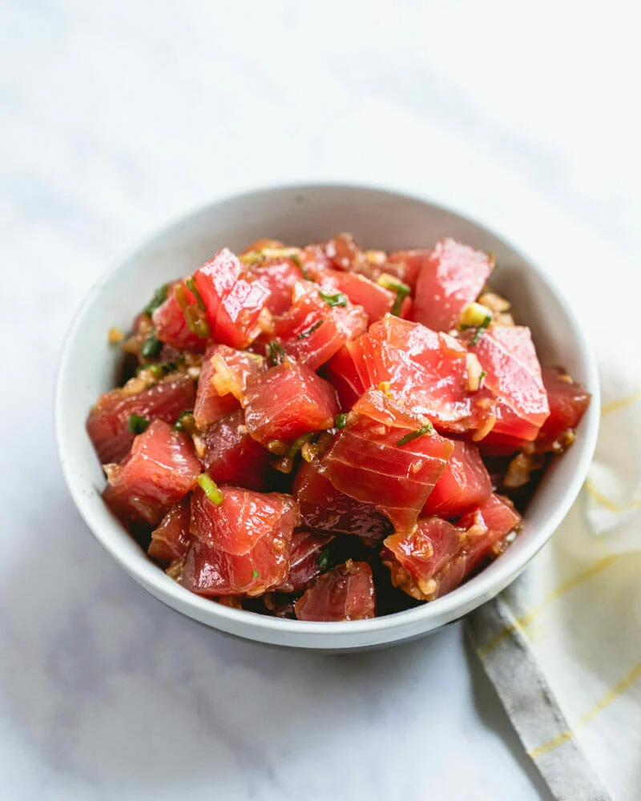

Ahi Poke

Description
Poke means “to slice” or “cut crosswise into pieces in Hawaiian. It refers to the raw fish that’s cut into cubes. It originated from Hawaiian fisherman who would season leftover parts of their catch for a snack! Poke is a Hawaiian-American food, but much of its flavor is influenced by Japanese cuisine: soy sauce, green onions, and sesame oil.
Ingredients
- 1 1/2 pounds ahi tuna, sushi or sashimi grade (3 steaks, 6 to 8 ounces each)
- ¼ cup minced sweet yellow onion
- 2 green onions, thinly sliced
- 3 tablespoons soy sauce
- 1 tablespoon sesame oil (not toasted)
- 1 small garlic clove, grated
- ½ teaspoon ginger, grated
- ¼ teaspoon kosher salt
- Small squeeze sriracha
Instruction
- Slice the tuna into 1-inch cubes. Mince the onion. Thinly slice the green onions. Mix them in a bowl with the soy sauce, sesame oil, garlic, ginger, kosher salt and Sriracha.
- Serve immediately, but for most authentic flavor marinate in refrigerator for 15 minutes to 1 hour. Taste and add a sprinkle of salt before serving.* (Get this in the fridge while the rice boils and you prep the veggies, and you can eat when it’s all done.).